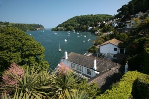
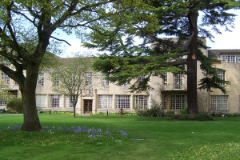

Nic Freeman's
University of Sheffield Webpage
I grew up in Dartmouth, on the south coast of England. I was a high-school student at Torquay Boys Grammar School, and an undergraduate at St Anne's College, Oxford.
My D.Phil. was supervised by Profs. Alison Etheridge and Ben Hambly, from 2009-2012. During this time I was a student of St Anne's College, Oxford and a non-stipendiary lecturer at St Peter's College, Oxford.
I spent three years as a post-doctoral fellow at the University of Bristol, before taking a permanent position at the University of Sheffield in 2015.
 